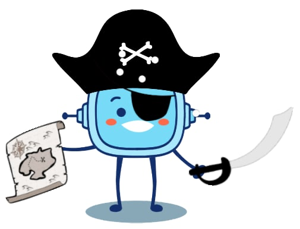
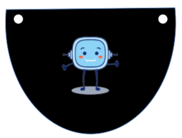

¡Llegó el momento!
Ya estamos preparados para esconder nuestro tesoro y que "no" lo encuentre Rétor el Tuerto.
Ha encontrado el mapa anterior, pero como lo hemos cambiado de lugar y nuestro mapa ahora va a estar escrito con unidades de medidas de longitud como el kilómetro, el metro, el centímetro, el milímetro, que no las conoce.
Aunque encuentre el mapa le va a ser imposible encontrar nuestro tesoro.
Así que, ... ¡A realizar el mapa del tesoro y escribir las instrucciones!
Lectura facilitada
¡Llegó el momento!
Preparados para esconder nuestro tesoro.
Rétor el Tuerto no puede encontrar el tesoro.
Rétor ha encontrado el mapa anterior.
Hemos cambiado de lugar el mapa.
Nuestro mapa estará escrito con unidades de medida de longitud:
- El kilómetro.
- El metro.
- El centímetro.
- El milímetro.
Rétor no conoce las unidades de medida de longitud.
Rétor puede encontrar el mapa
pero imposible encontrar nuestro tesoro.
Realizaremos el mapa del tesoro.
Escribiremos las instrucciones.
Tu propio parche
¿Te animas a tener tu propio parche del malvado Rétor el Tuerto? Sólo tienes que descargarte la ficha y buscar un pequeño elástico a tu medida...
¡Arriba mis valientes!
